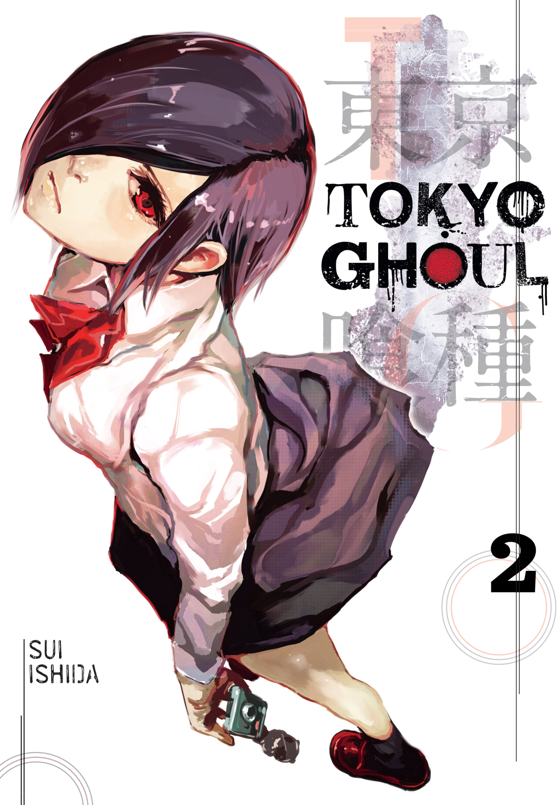
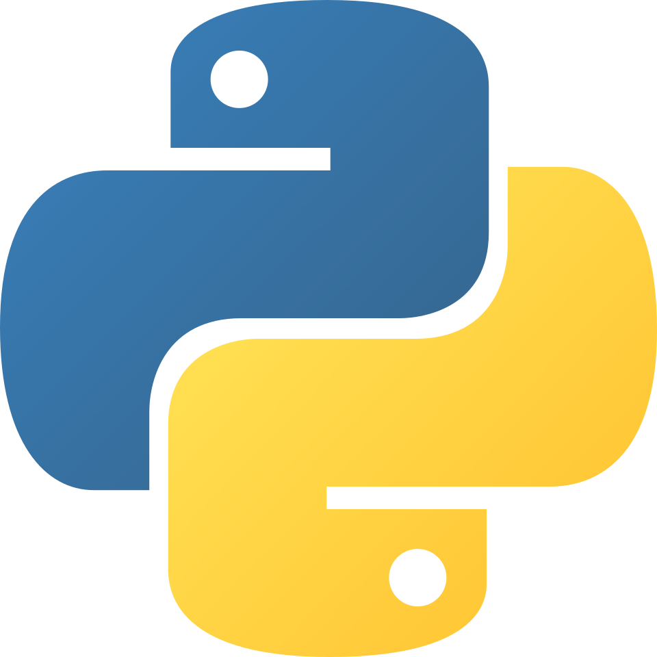

WELCOME TO MY PORTFOLIO
Hello, I'm Kent.
A Computer Science Student.
"To fall asleep you must first pretend to sleep. Therefore, the key to life is larping"
Explore My PortfolioAbout Me
Hi! My name is Kent Dory C. Purisima. I am a 1st Year BSCS student from Bicol University. I am passionate about technology and programming, and I aspire to become a skilled software developer in the future.
In my free time, I enjoy exploring new technologies, playing video games, watching anime, and spending time with friends and family.

Hobbies and Goals
Hobbies
- Playing Online Games
- Watching Anime and Doomscrolling
- Going to the Gym
Goals
- Be rich
- Finish my Degree
- Become a Software Developer/Engineer
My Class Schedule
| Class | Day | Time |
|---|---|---|
| Cs 101 - ITC | Mon | 9:00 am-12:00 pm |
| Cs 102 - Comprog | Mon, Tue, Wed | (Mon & Tue) 1:00 pm - 4:00 pm (Wed) 1:00 pm - 3:00 pm |
| Math Analysis | Tue, Thu, Fri | 9:00 am - 10:30 am & 10:00 am - 12:00 pm |
| Physics for Computing | Tue, Thu | 10:30 am - 12:00 pm |
| Pathfit | Wed | 7:00 am - 9:00 am |
| Understanding the Self | Fri | 1:00 pm - 4:00 pm |
| CWTS | Sat | 1:00 pm - 4:00 pm |
My Favorites



